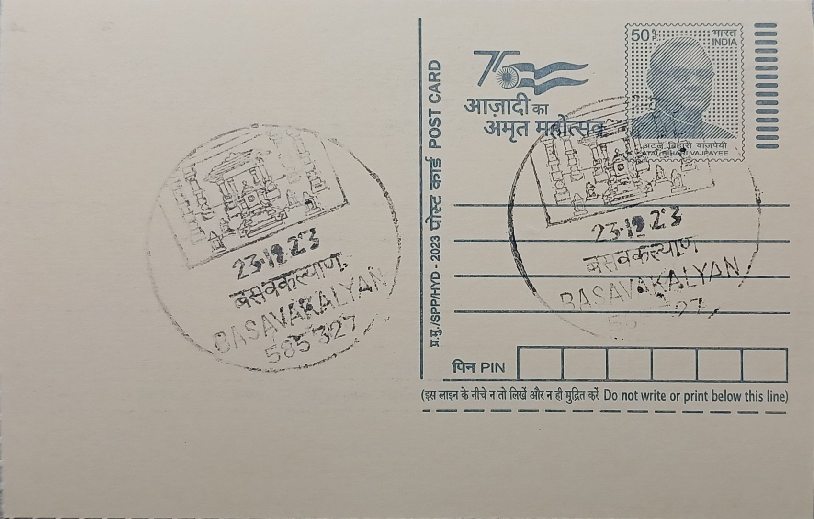

Anubhava Mantapa
ಅನುಭವ ಮಂಟಪ


The term "Anubhava Mantapa" translates roughly to "hall of spiritual experience," and tradition holds that it was founded in the twelfth century at Basavakalyan by Basavanna, who had risen to the position of minister in the court of the Kalachuri ruler Bijjala II before turning his energies toward religious and social reform. According to the accounts that have come down through vachana literature, the hall grew out of informal gatherings of devotees who wished to discuss questions of faith and conduct outside the constraints of temple ritual and caste protocol, and it came to be presided over by the mystic Allama Prabhu, who is traditionally regarded as its first presiding guru.
Within the history of Indian religious movements, the Anubhava Mantapa is frequently described as one of the earliest known forums of its kind anywhere, sometimes characterised as an early experiment in open religious assembly, convened at a time when access to scriptural debate was tightly restricted by caste and gender. It functioned as the intellectual and spiritual centre of the emerging Lingayat, or Veerashaiva, tradition, drawing sharanas (devotees) from across the Kannada-speaking region and beyond, including cobblers, weavers, washerfolk, and former ascetics alongside those born into priestly families. Its significance for Karnataka rests not on monumental architecture but on this claim to having institutionalised equality of discourse centuries before comparable ideas took organised form elsewhere.
Historical sources agree that the original Anubhava Mantapa was a modest structure, and no architectural remains of the twelfth-century hall survive at Basavakalyan today; what is known of it comes almost entirely through the vachanas, the free-verse devotional compositions attributed to Basavanna, Allama Prabhu, Akka Mahadevi, Channabasavanna, and several hundred other named and unnamed participants. These vachanas, composed in spoken Kannada rather than Sanskrit, record debates on caste, labour, ritual, and the nature of Shiva, and they remain the primary textual evidence for how the assembly actually conducted its sessions, often structured as questions posed to and answered by Allama Prabhu.
A defining later episode associated with Basavakalyan is the violent backlash the movement provoked: following tensions over an intercaste marriage sanctioned by the Lingayat community, Bijjala II is said to have ordered reprisals against the sharanas around 1168, leading to Basavanna's departure from Basavakalyan and his death soon after at Kudalasangama, while many of his followers scattered across the region carrying vachana manuscripts with them. This dispersal, rather than erasing the movement, is credited with spreading Lingayat ideas and vachana literature well beyond Basavakalyan itself, embedding the town permanently in Lingayat memory as the site of both the movement's founding assembly and its first major crisis.
In recent decades the Karnataka government has moved to give the site a physical presence commensurate with its symbolic weight: a large replica complex, with a project cost that rose from an initial estimate to a sanctioned outlay exceeding Rs 600 crore, has been constructed at Basavakalyan under successive state administrations, with foundation work inaugurated in 2019 and construction continuing through the following years under the state's Basava Samithi and tourism department. The complex today functions as a pilgrimage and heritage destination administered by the state government, drawing Lingayat devotees, researchers of vachana literature, and visitors tracing Basavanna's life, and it stands alongside Kudalasangama and other sites on the Basava circuit that the Karnataka tourism department now markets as a connected pilgrimage trail through Bidar district.
| Date of Introduction | January 10, 2019 |
|---|---|
| Address | Sub Postmaster, |
| Basavakalyan SO, | |
| Bidar (dt.), Karnataka - 585327. |